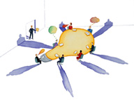

2.- Programación en capas.
Caso práctico

Después de unas semanas, Carlos ha conseguido reprogramar su aplicación de catalogación utilizando orientación a objetos. Le ha costado bastante esfuerzo, pero reconoce que el resultado merece la pena. El código resultante es mucho más limpio, y cada clase de las que ha creado tiene un cometido concreto y bien definido.
Ahora es mucho más fácil hacer cambios en el código. Definitivamente, tendrán que utilizar orientación a objetos cuando empiecen el nuevo proyecto. Mientras tanto, se propone volver sobre una asignatura pendiente: mejorar el aspecto de sus páginas. Y aunque conoce el lenguaje HTML, y sabe utilizar las hojas de estilo, decide pedirle consejo a un amigo suyo que se dedica al diseño de webs.
Su amigo trabaja en otra empresa y su función es diseñar el aspecto de los sitios web que crean. Cuando ve la aplicación de Carlos, queda muy impresionado por lo que ha avanzado en poco tiempo. Tras examinarla, le indica que tal y como está es muy difícil cambiar su aspecto. Tiene el código HTML distribuido en diversos ficheros, y entremezclado con el código PHP.
Le comenta que en su empresa utilizan mecanismos de separación del código y le anima a que los pruebe. Si lo hace, él se ofrece a darle un diseño más profesional a su aplicación. —¡Manos a la obra!
En el ejemplo anterior, hemos programado una aplicación web sencilla utilizando programación orientada a objetos. Sin embargo, si observaste el resultado obtenido, habrás visto como en muchas ocasiones se mezcla el código propio de la lógica de la aplicación, con el código necesario para crear el interface web que se presenta a los usuarios.
Por ejemplo, tanto la clase CestaCompra como la clase Producto, cuyo objetivo debería ser implementar la lógica de la aplicación, tienen un método llamado muestra destinado a generar etiquetas HTML. E inversamente, en algunas páginas que deberían simplemente generar HTML, puedes encontrar código que forma parte de la lógica de la aplicación. Por ejemplo, en la página productos.php, el código para incluir un nuevo producto en la cesta de la compra se encuentra mezclado con las etiquetas HTML.
Existen varios métodos que permiten separar la lógica de presentación (en nuestro caso, la que genera las etiquetas HTML) de la lógica de negocio, donde se implementa la lógica propia de cada aplicación. El más extendido es el patrón de diseño Modelo – Vista – Controlador (MVC). Este patrón pretende dividir el código en tres partes, dedicando cada una a una función definida y diferenciada de las otras.
- Modelo. Es el encargado de manejar los datos propios de la aplicación. Debe proveer mecanismos para obtener y modificar la información del mismo. Si la aplicación utiliza algún tipo de almacenamiento para su información (como un SGBD), tendrá que encargarse de almacenarla y recuperarla.
- Vista. Es la parte del modelo que se encarga de la interacción con el usuario. En esta parte se encuentra el código necesario para generar el interface de usuario (en nuestro caso en HTML), según la información obtenida del modelo.
- Controlador. En este módulo se decide qué se ha de hacer, en función de las acciones del usuario con su interface. Con esta información, interactúa con el modelo para indicarle las acciones a realizar y, según el resultado obtenido, envía a la vista las instrucciones necesarias para generar el nuevo interface.
La gran ventaja de este patrón de programación es que genera código muy estructurado, fácil de comprender y de mantener. En la web puedes encontrar algunos ejemplos de implementación del modelo MVC en PHP. Échale un vistazo al siguiente artículo sobre MVC en PHP.
Artículo sobre MVC en PHP de la web desarrolladorsenior.blogspot.com.
Aunque puedes programar utilizando MVC por tu cuenta, es más habitual utilizar el patrón MVC en conjunción con un framework o marco de desarrollo. Existen numerosos frameworks disponibles en PHP, muchos de los cuales incluyen soporte para MVC. En esta unidad no profundizaremos en la utilización de un framework específico, pero existen numerosos recursos con información en Internet, incluyendo la página bestwebframeworks.com, dedicada exclusivamente a ellos.
Para saber más
A la hora de elegir un framework deberás estudiar cuál se adapata mejor a tus necesidades. Algunas características que deberás tener en cuenta es la versión de PHP que soporta, si soporta el MVC, funciones AJAX, autenticación, etc. Para ello te puedes guiar con la información que nos facilita la página de bestwebframeworks.com mencionada anteriormente.
Entre los frameworks más usados ultimamente tenemos Yii, CodeIgniter, CakePHP, Zend, Symfony y Laravel. Otro framework que está ganando grandes adeptos es Phalcon, ya que está optimizado para alto rendimiento. Aquí tienes algunos enlaces a documentación de estos frameworks por si quieres profundizar un poco más:
Documentación en español de Yii
Guía del Usuario de CodeIgniter
Documentación en español de CakePHP
Laravel 4 desde cero (en español)
Documentación de Laravel 8.x (en inglés)
Documentación en español de Phalcon
Enlace a Cursos en videotutoriales de algunos de los frameworks mencionados